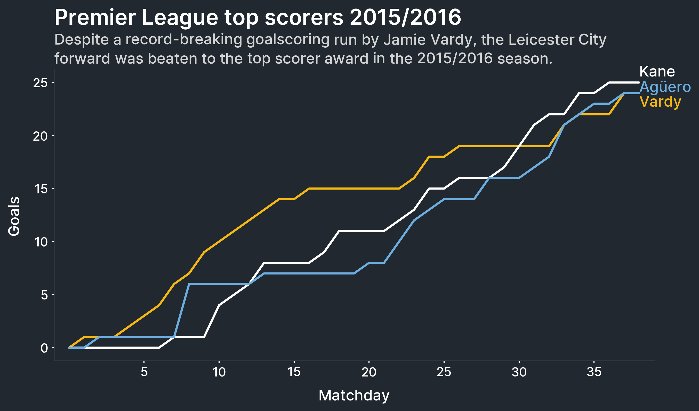

1. Getting started¶
All of Multiplex’s visualizations revolve around the Drawable class.
A Drawable is nothing more than a class that wraps a matplotlib figure and an axis.
All of the functions that you would call on a matplotlib axis, you can call on the Drawable.
The Drawable instance re-routes unknown functions to the matplotlib axis.
However, the Drawable also comes with new visualizations to help you explore or explain data faster.

To start working with a Drawable, create it from a normal plot:
import matplotlib.pyplot as plt
from multiplex import drawable
viz = drawable.Drawable(plt.figure(figsize=(10, 5)))
If you want to plot on a particular axis, or a subplot, create it as follows instead:
import matplotlib.pyplot as plt
from multiplex import drawable
figure, axis = plt.subplots(2, 1, figsize=(10, 10))
viz = drawable.Drawable(figure, axis[0])
To learn more about how Multiplex works, keep reading the documentation. If all you want is to get your hands dirty, take a look at the examples directory. Happy visualizing!
Drawable¶
All of Multiplex’s visualizations revolve around the Drawable class.
A Drawable is nothing more than a class that wraps a matplotlib figure and an axis.
All of the functions that you would call on a matplotlib axis, you can call on the Drawable.
The Drawable instance re-routes unknown functions to the matplotlib axis.
However, the Drawable also comes with new visualizations to help you explore or explain data faster.
-
class
drawable.Drawable(figure, axis=None)¶ The
Drawableclass wraps a matplotlib figure and axis to provide additional functionality. If no axis is given, the default plot axis (plt.gca()) is used. TheDrawableclass can be used as a normalmatplotlib.axis.Axisobject with additional functionality. The axis functionality can be called on theDrawableclass. TheDrawableinstance re-routes method and attribute calls to thematplotlib.axis.Axisinstance.To create a
Drawableinstance from a normal plot:viz = drawable.Drawable(plt.figure(figsize=(10, 5)))
To create a
Drawableinstance from an axis, or a subplot:figure, axis = plt.subplots(2, 1, figsize=(10, 10)) viz = drawable.Drawable(figure, axis[0])
- Variables
figure (
matplotlib.figure.Figure) – The figure that theDrawableclass wraps.axis (
matplotlib.axis.Axis) – The axis where the drawable will draw._time_series (
TimeSeries) – The time series object that is being used._annotations (list of
TextAnnotation) – The annotations in the visualization.
-
__init__(figure, axis=None)¶ Create the drawable with the figure.
- Parameters
figure (
matplotlib.figure.Figure) – The figure that theDrawableclass wraps. This is mainly used to get the figure renderer.axis (None or
matplotlib.axis.Axis) – The axis (or subplot) where to plot visualizations. If None is not given, the plot’s main subplot is used instead.
-
set_caption(caption, alpha=0.8, lineheight=1.25, *args, **kwargs)¶ Add a caption to the subplot. The caption is added just beneath the title. The method re-draws the title to make space for the caption.
The caption is a
Annotationobject. Any arguments that the constructor accepts can be provided to this method.- Parameters
caption (str) – The caption to add to the axis.
alpha (float) – The opacity of the caption between 0 and 1.
lineheight (float) – The space between lines.
- Returns
The drawn caption.
- Return type
-
__getattr__(name)¶ Get an attribute indicated by name from the class. If it gets to this point, then the attribute does not exist. Instead, it is retrieved from the
Drawableaxis.- Parameters
name (str) – The name of the attribute.
- Returns
The function applied on the axis.
- Return type
function
-
draw_text_annotation(*args, **kwargs)¶ Draw a text annotation visualization on this
Drawable. The arguments and keyword arguments are those supported bydraw()method.- Returns
The drawn text annotation’s lines. Each line is made up of tuples of lists. The first list in each tuple is the list of legend labels. The second list in each tuple is the list of actual tokens.
- Return type
list of tuple
-
draw_time_series(*args, **kwargs)¶ Draw a time series visualization on this
Drawable. The arguments and keyword arguments are those supported bydraw()method.- Returns
A tuple made up of the drawn plot and label.
- Return type
tuple
-
annotate(text, x, y, marker=None, pad=0.01, *args, **kwargs)¶ Add an annotation to the plot. Any additional arguments and keyword arguments are passed on to the annotation’s
draw()function. For example, the va can be provided to specify the vertical alignment. The align parameter can be used to specify the text’s alignment.- Parameters
text (str) – The text of the annotation to draw.
x (tuple) – A tuple containing the start and end x-coordinates of the annotation.
y (float) – The y-coordinate of the annotation.
marker (None or dict) – The marker style. If it is not given, no marker is drawn.
pad (float) – The amount of padding applied to the annotation.
-
__weakref__¶ list of weak references to the object (if defined)
Visualizations¶
Multiplex also contains visualization types to help you get started creating new types of visualizations.
All types of visualizations are made up of Drawable.
-
class
visualization.Visualization(drawable, *args, **kwargs)¶ All visualizations contain at least a
Drawable.-
__init__(drawable, *args, **kwargs)¶ Create the visualization with a drawable.
-
__weakref__¶ list of weak references to the object (if defined)
-
A labelled visualization is one that allows labels.
These labels are normal TextAnnotation.
However, a labelled visualization has functionality to ensure that the labels do not overlap.
-
class
labelled.LabelledVisualization(*args, **kwargs)¶ The labelled visualization adds functionality to visualizations that use labels. Labels are normal
TextAnnotation. This class adds functionality to distribute overlapping labels.- Variables
labels (list of
TextAnnotation) – The labels in the visualizations. This list is used to ensure that labels do not overlap.
-
__init__(*args, **kwargs)¶ Create the labelled visualization by initializing the list of labels.
-
draw_label(label, x, y, va='center', *args, **kwargs)¶ Draw a label at the end of the line.
- Parameters
label (str) – The label to draw.
x (float) – The x-position of the last point on the line.
y (float) – The y-position of the last point on the line.
va (str) – The vertical alignment, can be one of top, center or bottom. If the vertical alignment is top, the annotation grows down. If the vertical alignment is center, the annotation is centered around the given y-coordinate. If the vertical alignment is bottom, the annotation grows up.
- Returns
The drawn label.
- Return type
-
_arrange_labels()¶ Go through the labels and ensure that none overlap. If any do overlap, move the labels. The function keeps repeating until no labels overlap.
Note
The distribution is vertical only.
-
_get_overlapping_labels()¶ Get groups of overlapping labels. The function returns a list of lists. Each inner list contains the labels that overlap. The function automatically excludes labels that do not overlap with other labels.
- Returns
A list of lists. Each inner list represents overlapping labels.
- Return type
list of lists of
matplotlib.text.Text
-
_distribute_labels(labels)¶ Distribute the given labels so that they do not overlap.
- Parameters
labels (list of
matplotlib.text.Text) – The list of overlapping labels.
-
_get_total_height(labels)¶ Get the total height of the given labels.
- Parameters
labels (list of
matplotlib.text.Text) – The list of labels.- Returns
The total height of the labels.
- Return type
float
-
_get_middle(labels)¶ Get the middle y-coordinate of the given labels. The middle is calculated as the mid-point between the label that is highest and lowest.
- Parameters
labels (list of
matplotlib.text.Text) – The list of labels.- Returns
The middle y-coordinate of the labels.
- Return type
float